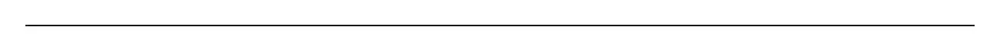

A before/after slider: two images stacked in the same box with a divider you drag across them, so the second is revealed over the first instead of sitting next to it. Reach for it wherever a page has to show the same frame twice and the point is the difference: a photo edit or retouch shown against the original, an AI upscale, denoise, colourise, restore or background-removal result next to its input, a generative fill or inpainting demo, a model-A-vs-model-B output pair, a renovation or remodel gallery, before-and-after in a portfolio or case study, a design revision against the version it replaced, satellite or map imagery of the same place at two dates, a scan or microscopy image with and without processing, graphics settings or shader quality in a game, a screenshot in light and dark theme, and image compression quality (original against the optimised file). Common asks it answers: "before after slider", "before and after image component", "image comparison slider", "compare two images react", "split image slider", "image reveal slider", "drag to compare photos", "photo comparison component", "before/after react component", "img-comparison-slider alternative", "react-compare-image alternative", "react-compare-slider alternative", "shadcn before after", "shadcn image comparison". Official shadcn/ui has nothing for this and no combination of its parts gets there: slider is a Radix range primitive that knows nothing about images, aspect-ratio only holds a box at a shape, and carousel shows pictures one after another rather than one over the other. Distinct from diff-view, which compares two pieces of text line by line — this one compares two pictures of the same thing. Pass `before` and `after` and that is the whole setup: `before` lays out in normal flow and gives the pair its height, `after` is overlaid and clipped, and `beforeLabel` / `afterLabel` pin captions to the corners that disappear when their side is closed. It is uncontrolled by default (`defaultPosition`) and controlled by passing `position` with `onPositionChange`, which fires on every drag frame and key press. The interaction is a real range input covering the whole picture rather than a mousedown/mousemove pair, which is where hand-rolled versions come apart. Dragging works from anywhere on the image, a click jumps the divider, pointer capture keeps the drag alive when the cursor leaves the box, and touch and pen work without a second code path — none of which a mouse-event implementation gets, and it cannot be operated from a keyboard at all. Here the arrow keys move the divider by one percent, Page Up and Page Down by ten, Home and End go to the ends, and each press snaps to the step's own grid so a keyboard user lands on whole numbers instead of inheriting the fraction a drag left behind. Three details it settles that are invisible until they are wrong. The thumb is one pixel wide, because a range maps the pointer onto the track minus the thumb, and a default 16px thumb leaves the drawn divider drifting up to eight pixels from the finger near the edges. `touch-action: pan-y` keeps a vertical swipe scrolling the page, so an image that spans a phone screen is not a trap you cannot scroll past. And the input is `dir="ltr"` whatever the page direction, because 0 has to mean the left edge — a divider is a place on a picture, not a position in a line of text. Accessibility is the pair, not just the control: clipping is visual, so both images stay in the accessibility tree and a screen reader reads both alt texts, while the divider is a labelled slider that announces its position as a percentage. The focus ring is drawn on the visible handle through the transparent input, so it is themed rather than a browser outline over a photograph. Styled entirely with shadcn tokens (background, border, foreground, ring), so it follows light and dark mode, and it ships zero dependencies — no Radix, no icon package, one file.

Rendered on the shadcn default neutral palette with harness-generated props.
pnpm dlx shadcn@4.21.0 add @pulld/image-comparison
| licence | POINTER |
|---|---|
| primitive base | none |
| type | registry:ui |
| files | src/components/ui/image-comparison.tsx |
| npm deps pulled | none beyond the pre-installed peer set |
| registry deps | — |
| semantic / palette / hex | 12 / 0 / 0 |
| writes shared ui/ | yes — can overwrite the project’s own primitives |